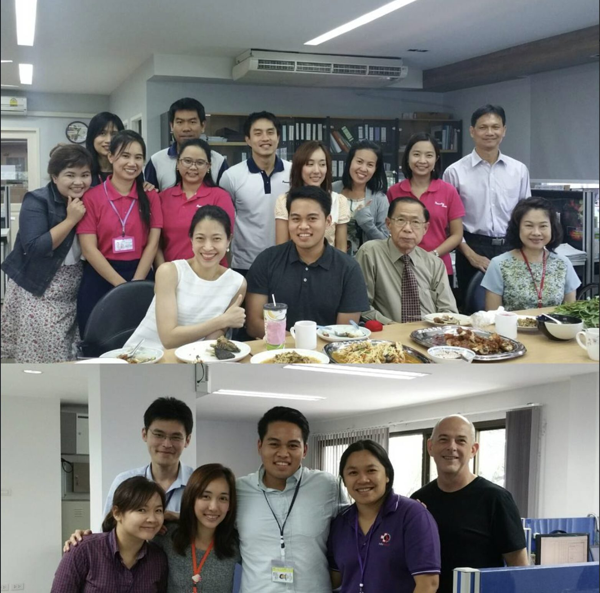
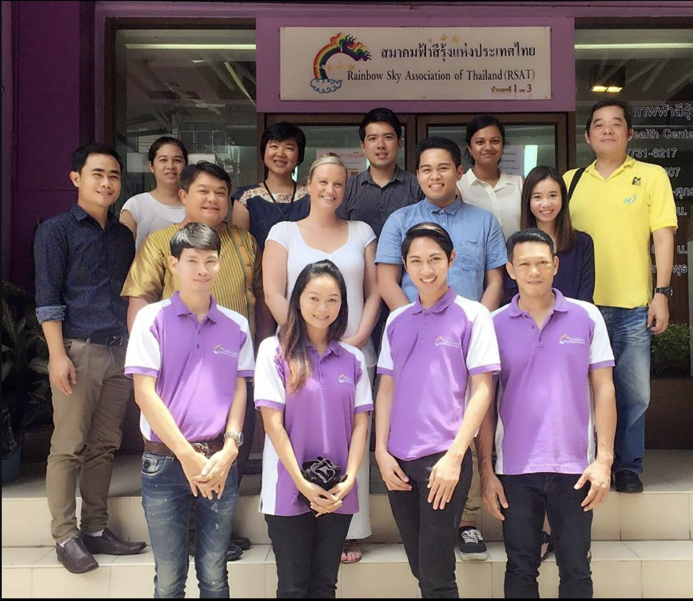
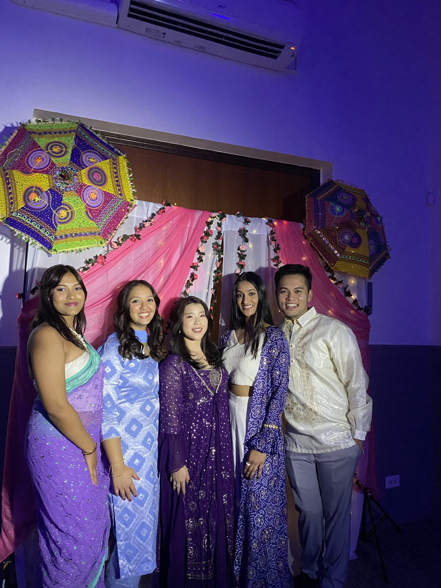
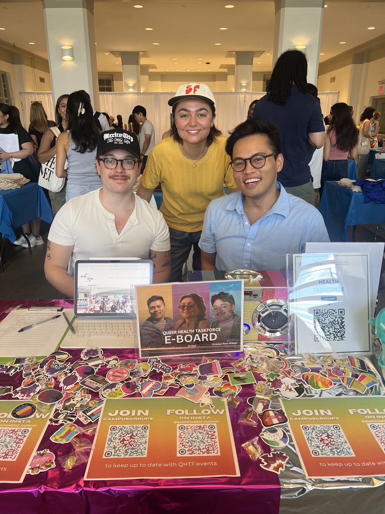
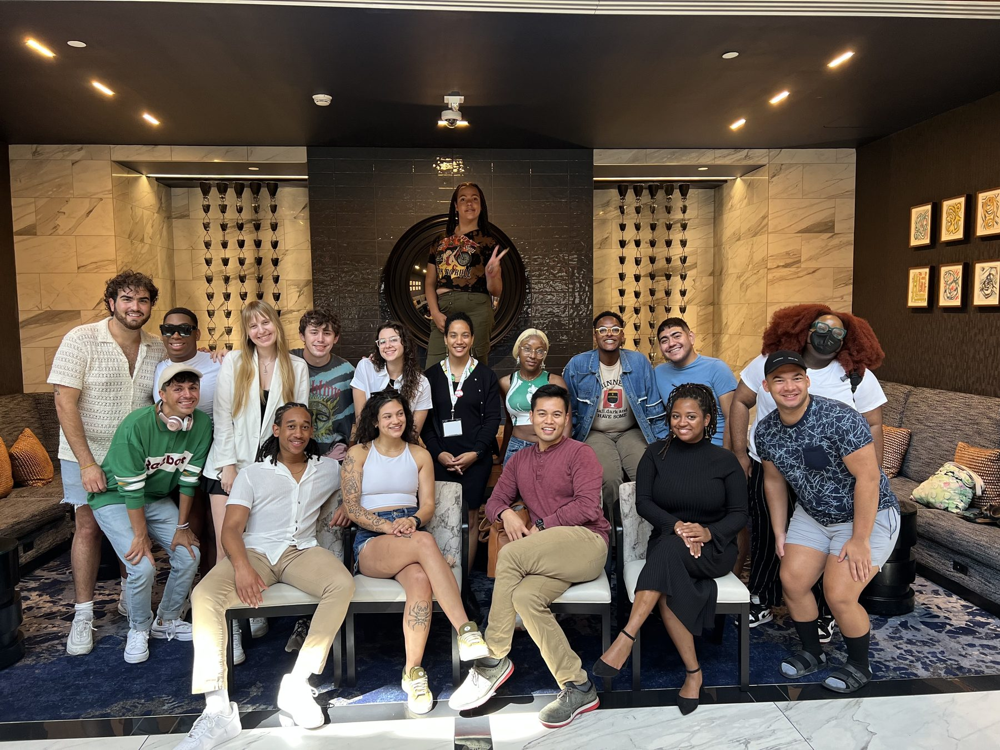

Since beginning with the National Institutes of Health in 2016, my work has focused on advancing health equity, improving public health systems, and supporting communities through research, education, and evidence-based practice, always alongside dedicated teams, mentors, and community partners.
I have dedicated nearly a decade to HIV and public health research, beginning with the National Institutes of Health in 2016. The mentors and communities I met through this training set the trajectory for everything that followed.


Advocates for Asian, Pacific Islander, Desi-American Health. Directed recruitment strategy engaging a 200+ student organization at Columbia Mailman.
Queer Health Task-Force. Led digital outreach and advertising campaigns advancing campus-wide engagement and inclusion.
Columbia University, Project STAY. Delivered 30+ one-on-one counseling sessions to youth in high-incidence HIV/STI areas, supporting harm reduction and healthier decision-making.
US Conference on HIV/AIDS, 2023. Presented two decades of HIV science and biomedical prevention progress to nationally selected emerging leaders.



MPH, Population & Family Health (2026)
Certificate in Health Communications
BA, Public Health (2017)
First bachelor's student to receive the UH Public Health Alumni Association Scholarship. Dean's List. Resident Advisor. Health Careers Opportunity Program Mentor.
“When one of my PrEP clients tested positive for HIV, I felt like I had failed my community. Listening to my clients, I realized that health inequities profoundly shape the lives within my community, and that ignited my passion for innovating sexual health promotion.”